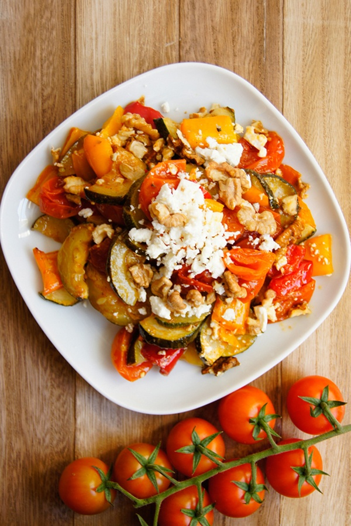

Zapiekanka
z serem feta

Czas przygotowania: 100 min
Typ diety: vege
Typ posiłku: kolacja
Zapiekanka
z serem feta
Czas przygotowania: 100 min
Typ diety: vege
Typ posiłku: kolacja
Formę do tarty wykładamy ciastem francuskim tak, by przylegało do jej dna i boków. Nadmiar ciasta odkrawamy wzdłuż brzegu formy. Na dnie rozsmarowujemy pesto. Ser feta kruszymy w dłoniach i rozkładamy równomiernie na warstwie pesto.Bakłażan ze skórką, marchew i cukinię kroimy w cienkie, długie i równe paski za pomocą obieraczki, mandoliny lub nożyka do julienne. W przypadku cukinii i bakłażana do tego celu możemy również użyć noża.
Pierwsze 6 pasków warzyw nakładamy na siebie naprzemiennie i zwijamy w niewielki, ciasny rulon, który następnie układamy na środku formy. Kolejne plastry układamy wokół rulonu, tworząc kolorową spiralę, która ma wypełnić całą powierzchnię formy.Zapiekankę kroimy na kawałki za pomocą ostrego noża. Opcjonalnie posypujemy posiekanymi orzeszkami pinii lub pokruszonym serem feta.